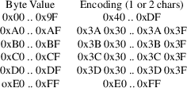
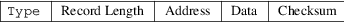

srec_wilson - wilson file format
This is a mystery format, added to support a mysery EPROM loader used by Alan Wilson <dvdsales@dvdlibrary.co.uk>
If you know the true name of this format, please let me know! It bears a remarkable similarity to the Motorola S-Record format, however I can find no reference to a "compressed" Motorola format.
The
Lines
Each line contains normal ASCII characters, and “high
bit on[rq] characters, but the ASCII control characters are
avoided (the high-bit-on con characters are not avoided).
Normal line termination characters (CRLF or LF, depending on
your system) are used.
The presence of high-bit-on characters makes this format unattractive to send via email, as it must be wrapped as a binary attachment, increasing its size.
In general, a single byte per byte is used to encode values, however some values use two bytes, according to the following table:

The rest of this description, when refering to “bytes[rq] means byte values encoded using the above table.
The
Fields
Each line consists of 5 fields. These are the type field,
length field, address field, data field, and the
checksum.

|
Type |
The type field is a 1 character field that specifies whether the record is data (0x43), or termination (0x47). |
Record Length
The record length field is a 1 byte field that specifies the number of bytes in the record, excluding the type and record length fields.
|
Address |
This is a 4-byte address that specifies where the data is to be loaded into memory. | ||
|
Data |
The data field contains the executable code, memory-loadable data or descriptive information to be transferred. |
Checksum
The checksum is an 1-byte field that represents the least significant byte of the one’s complement of the sum of the values represented by the bytes making up the length, address, and data fields.
Record
Types
0x43 (#)
A record containing data and the 4-byte address at which the data is to reside.
0x47 (’)
A termination record. The address field may contain the 4-byte address of the instruction to which control is passed. There is no data field.
Size
Multiplier
In general, binary data will expand in sized by
approximately 1.5 times when represented with this
format.
srec_cat
version 1.65
Copyright (C) 1998, 1999, 2000, 2001, 2002, 2003, 2004,
2005, 2006, 2007, 2008, 2009, 2010, 2011, 2012, 2013, 2014,
2018, 2019, 2022 Peter Miller
The srec_cat program comes with ABSOLUTELY NO WARRANTY; for details use the ’srec_cat -VERSion License’ command. This is free software and you are welcome to redistribute it under certain conditions; for details use the ’srec_cat -VERSion License’ command.